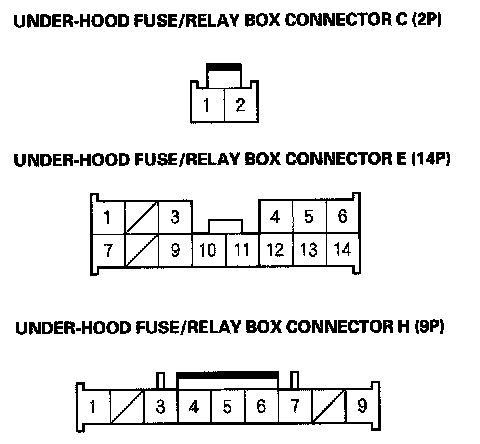

Oxygen Sensor Relay: Testing and Inspection
PGM-FI main relay 1, Ignition coil relay, A/F sensor Relay, ETCS Relay
1. Disconnect the negative battery cable, then disconnect the under-hood fuse/relay box connectors C (2P), E (14P), and H (9P).
2. Connect battery power to the C2 terminal.
PGM-FI main relay 1:
- Connect the E5 terminal to body ground. There should be battery voltage between the H1 terminal and body ground.
- Disconnect the E5 terminal from the body ground. There should be no voltage between the H1 terminal and the body ground.
Ignition coil relay:
- Connect the E5 terminal to body ground. There should be battery voltage between the H6 terminal and body ground.
- Disconnect the E5 terminal from the body ground. There should be no voltage between the H6 terminal and the body ground.
A/F sensor relay:
- Connect the E5 and E13 terminals to body ground. There should be battery voltage between the H9 terminal and body ground.
- Disconnect the E5 terminal from the body ground. There should be no voltage between the H9 terminal and the body ground.
ETCS relay:
- Connect the E5and E14 terminals to body ground. There should be battery voltage between the H7 terminal and body ground.
- Disconnect the E5 terminal from the body ground. There should be no voltage between the H7 terminal and the body ground.